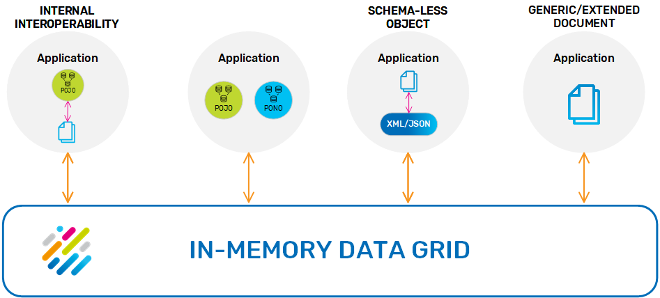

In previous releases the ExternalEntry class was used to achieve this functionality. Starting with 8.0, the SpaceDocument class should be used to accomplish these needs in a simpler and safer manner, whereas ExternalEntry has been deprecated and should no longer be used.
When working with documents, the user is in charge of creating and registering the Space type descriptor manually before interacting with the document types. When working with POJOs, the system implicitly generates a Space type descriptor for the POJO's class using annotations or gs.xml files when the class is used for the first time. In order to inter-operate, the same type descriptor should be used for both POJOs and documents.
If the POJO's class is in the application's classpath, or the POJO is already registered in the Space, there's no need to register it again - the application will retrieve it automatically when it is used for the first time. For example:
// Create a document template using the POJO class name:
SpaceDocument template = new SpaceDocument(MyPojo.class.getName());
// Count all entries matching the template:
int count = gigaSpace.count(template);
If the POJO's class is not available in the classpath or in the data grid, the application throws an exception indicating that there is no type descriptor registered for the specified type. In this case, it is possible to manually create a matching type descriptor using the SpaceTypeDescriptorBuilder and register it in the Space. However, this is not recommended because it essentially requires duplicating all the POJO settings and maintaining them if the POJO changes.
When no interoperability is involved this is a trivial matter - Querying a POJO type returns POJOs, querying a document type returns documents.
When we want to mix and match, we need semantics to determine to query result type - POJO or document.
Template query result types are determined by the template class - if the template is an instance of a SpaceDocument, the results will be documents, otherwise they will be POJOs.
For example:
// Read all product entries as POJOs:
Product[] objects = gigaSpace.readMultiple(new Product(), Integer.MAX_VALUE);
// Read all product entries as Documents:
SpaceDocument[] documents = gigaSpace.readMultiple(
new SpaceDocument(Product.class.getName()), Integer.MAX_VALUE);
The SQLQuery class has been enhanced with a QueryResultType parameter. The following options are available:
OBJECT - Return java Object(s) (POJO).DOCUMENT - Return space document(s).DEFAULT - If the type is registered with a concrete java class, return an Object. Otherwise, return a document. This is the default behavior.For example:
// Read a POJO using an SQL query - same as always:
Product pojo = gigaSpace.read(
new SQLQuery<Product>(Product.class, "name='Dynamite'"));
// Read a document using an SQLQuery when there's no
// compatible POJO - no need to specify query result type:
SpaceDocument document = gigaSpace.read(
new SQLQuery<SpaceDocument>("Product", "name='Dynamite'"));
// Read a documnet using an SQLQuery when there is a
// compatible POJO - explicitly specify query result type:
SpaceDocument document = gigaSpace.read(
new SQLQuery<SpaceDocument>(Product.class.getName(),
"name='Dynamite'", QueryResultType.DOCUMENT));
This strategy both preserves backwards compatibility and simplifies non-interoperability scenarios, which are more common than interoperability scenarios.
In order to support ID queries for documents, the IdQuery class has been introduced, which encapsulates the type, ID, routing and a QueryResultType. New GigaSpace signatures have been added for readById, readIfExistsById, takeById, takeIfExistsById. The result type is determined by the QueryResultType, similar to SQLQuery.
For example:
// Read a POJO by id - same as always:
Product pojo = gigaSpace.readById(new IdQuery<Product>(Product.class, 7));
// Read a document by id when there's no
// compatible POJO - no need to specify query result type:
SpaceDocument document = gigaSpace.readById(
new IdQuery<SpaceDocument>("Product", 7));
// Read a document by id when there is
// a compatible POJO - explicitly specify query result type:
SpaceDocument document = gigaSpace.readById(
new IdQuery<SpaceDocument>(Product.class.getName(), 7,
QueryResultType.DOCUMENT));
Respectively, to support multiple ID queries, IdsQuery was also introduced, with new signatures for readByIds and takeByIds. For example:
Object[] ids = new Object[] {7, 8, 9};
// Read POJOs by ids - same as always:
Product[] pojos = gigaSpace.readByIds(
new IdsQuery<Product>(Product.class, ids)).getResultsArray();
// Read documents by ids when there's no
// compatible POJO - no need to specify query result type:
SpaceDocument[] documents = gigaSpace.readByIds(
new IdsQuery<SpaceDocument>("Product", ids)).getResultsArray();
// Read documents by ids when there is a
// compatible POJO - explicitly specify query result type:
SpaceDocument[] documents = gigaSpace.readByIds(
new IdsQuery<SpaceDocument>(Product.class.getName(),
ids, QueryResultType.DOCUMENT)).getResultsArray();
The original readById (and related methods) signatures are not suited for document types, because they require a concrete Java class. They always return POJO(s).
When a type descriptor is created from a POJO class, the type descriptor builder checks if the POJO class supports Dynamic Properties. If it doesn't, the type descriptor will also not support dynamic properties. If a Space document is created using the same type with a property that is not defined in the POJO and written to the Space, an exception is thrown indicating the property is not defined in the type and the type does not support dynamic properties.
It is possible to manually create a SpaceTypeDescriptor of the POJO using the SpaceTypeDescriptorBuilder and enable dynamic properties. However, if client A writes a document with a dynamic property and client B reads it as a POJO, the dynamic property is ignored, and if client B proceeds to update the entry the dynamic property is deleted from the Space.
If the POJO contains properties that are POJO themselves, the Space implicitly converts these properties to Space documents as needed. For example:
// Create a POJO entry with a POJO property and write it to space:
Person personPojo = new Person()
.setName("smith")
.setAddress(new Address()
.setCity("New York")
.setStreet("Main"));
gigaSpace.write(personPojo);
// Read POJO entry as a document:
SpaceDocument template = new SpaceDocument(Person.class.getName())
.setProperty("name", "smith");
SpaceDocument personDoc = gigaSpace.read(template);
// Get address document from person document:
SpaceDocument addressDoc = personDoc.getProperty("address");
This works the other way around as well - if a Space document is created with a nested Space document property, it is converted to a POJO with a nested POJO property when read as a POJO.
If you prefer to disable this implicit conversion and preserve the nested POJO instance within document entries, use the @SpaceProperty annotation and set documentSupport to COPY:
public class Person {
...
@SpaceProperty(documentSupport = SpaceDocumentSupport.COPY)
public Address getAddress() {...}
public Person setAddress(Address address) {...}
...
}
In this case the result will be:
// Write POJO entry same as before
...
// Read POJO entry as a document:
SpaceDocument template = new SpaceDocument(Person.class.getName())
.setProperty("name", "smith");
SpaceDocument personDoc = gigaSpace.read(template);
// Get address POJO from person document:
Address addressPojo = personDoc.getProperty("address");
The SpaceDocumentSupport can be one of the following:
CONVERT – Value is converted to/from a Space document, according to the operation's context.COPY – Value reference is copied as-is, and no conversion is performed.DEFAULT – Behavior will be determined automatically according to the object's class.This behavior applies to arrays and collections as well (for example, if Person has List<Address> getAddresses(), it is converted to a list of address documents).
Local View and Local Cache supports both POJOs and Documents. Unlike an embedded Space, the entry is stored in the cache as a user object (either POJO or document), which speeds up query performance because the result entries do not have to be transformed.
When working with POJOs only or Documents only, this is not an issue. However, when working in a mixed POJO-document environment it is important to understand how the objects are stored in cache to assure optimal performance.
Local view is defined by one or more views, which are essentially SQL queries, so the query result type discussed above actually determines if the objects are stored locally as POJOs or documents.
Local cache stores its object locally according to the master Space; If a POJO entry is written to the master Space, it is kept in the local cache as a POJO as well, and if a document entry is written to the master it is kept as document in the local cache. If a user asks the local cache for a document result but the entry is stored as a POJO it will be converted, and vice versa.
Space Filters are supported for Space documents. If the Space type descriptor that is registered in the Space contains the POJO class, the entry is passed to the filter as a POJO. Otherwise, it is passed to the filter as a document.